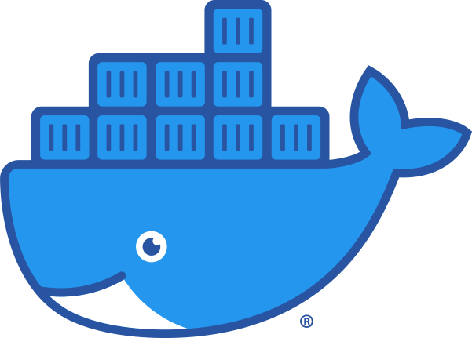

Qui suis-je ?
Étudiant en première année de BUT informatique, passionné par ce domaine depuis mon enfance, je souhaite en faire mon activité professionnelle.
Mon Parcours
-
Juillet 2022
Baccalauréat
Obtention de mon baccalauréat général avec les spécialités mathématiques et sciences de l'ingénieur.
- Septembre 2022
-
Mai 2023
Alternance
Obtention de mon alternance dans le groupe Orange Business.
-
Septembre 2025
École d'Ingénieur
Peut-être une entrée en école d'ingénieur à la fin de mon BUT ?

Ma Boîte à Outils
Systèmes


Front-end


Back-end


Mes Compétences
Le programme de l'IUT nous permet de développer 6 compétences grâce à différents projets.